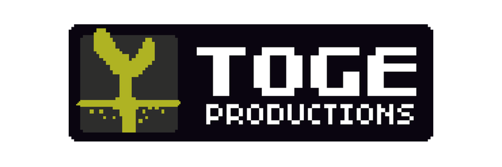

Gojek

TOGE PRODUCTIONS is an Indonesian based independent game development and publishing studio.
We’re best known for games such as Infectonator, Relic of War, Days 2 Die, Necronator.
Toge is an Indonesian word that means “bean sprout”. Here in Toge Productions, we believe that great accomplishments can start from small & simple beginnings, just like bean sprouts. Not only that, bean sprouts grow fast and quick to adapt too.
Humble Beginnings
In 2009, games development is both unknown and alien in Indonesia. At that time, Kris Antoni started making Flash games with a friend to earn some pocket money. Soon, they created a small game called Infectonator and it becomes a huge hit. What started as a hobby making Flash games soon evolved into something more serious for a couple of fresh grads in their bedrooms.
Game Development
Since 2009, we’ve created tons of games across multiple genres, from web games to mobile games to desktop games. We are always experimenting with new game ideas and finding new ways to have fun! dor more information click
here